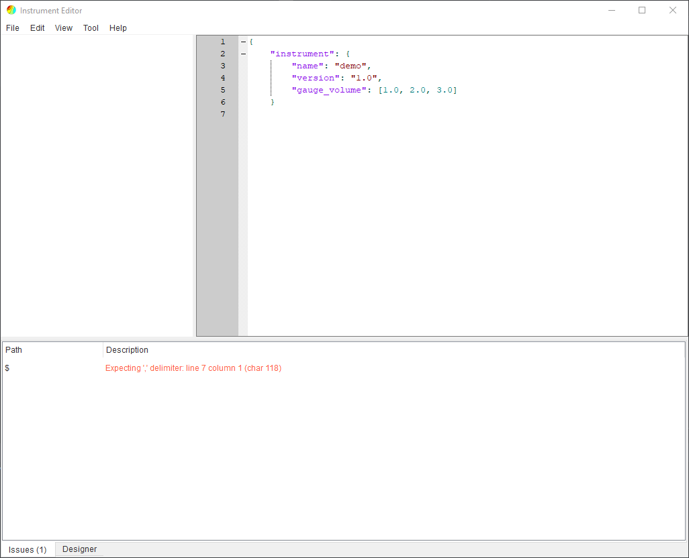
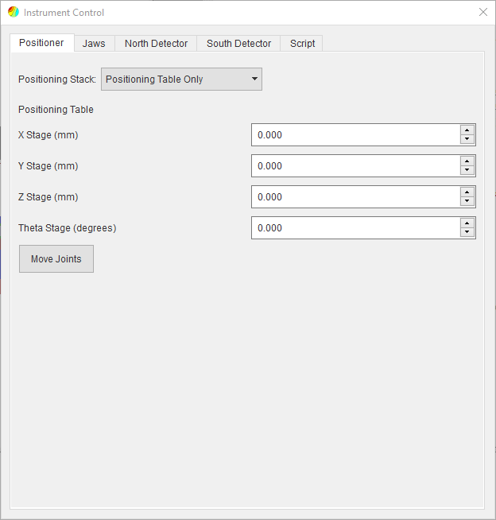

Instrument Editor¶
This is a tool for modifying instrument description files for SScanSS 2. The editor simplifies the creation and modification of instrument description files by providing real-time validation against the instrument schema and giving user friendly error messages to the developer. It will also validate that referenced files (3D model, templates etc) exists.

Graphical User Interface¶
The user interface of the instrument editor consists of a menu bar on top and a main widget which is divided into three regions. The main widget contains the graphics window on the left, the JSON editor on the right, and the message window on the bottom. These regions are separated by splitters which allows adjustment of the size of the regions by dragging the boundary between them.
JSON Editor¶
The JSON editor is a QScintilla-based text editor that supports JSON highlighting, line numbers, copy and paste etc. The instrument description is validated in real-time as changes are made in the editor. The developer would be prompted to save if an attempt is made to close the editor without saving. The editor can provide autocomplete suggestions for keywords when the user is actively writing an instrument descriptor file (See IDF), as well as automatically matching braces.
Graphic Window¶
The graphics window is the same as the one used in SScanSS 2 (See navigation). It supports scene rotation with the left mouse button, panning with the right mouse button and zooming with the mouse wheel.
Issues Window¶
The issue window informs the developer if the instrument description is valid. The window will display JSON format errors, instrument schema errors and others.
Warning
An error will be thrown if a required keyword is missing but no error will be thrown if optional keywords are missing. Mis-spelling an optional keyword will not result in an error so it is important to double check optional keywords.
Designer¶
The designer provides a set of forms for adding and updating the components of the instrument description (i.e. jaws, collimators, positioners etc.). To open the designer, click Tools > Designer and select the desired component. The form will open in a tab next to the issues window and the form will contain the current json values. After changing the form inputs, click the Update Entry button to change the json values in the editor.

The designer form will validate the required inputs and update the json values. If the json in the editor is invalid (i.e. missing delimiters), the form will be disabled, address the error message in issues tab to fix the json in the editor and re-enable the form.
{kind=link}
Controlling the Instrument¶
When an instrument description file is opened in the editor, the instrument will be loaded in the default state with the first positioning stack, default collimator and jaws state. The state of the instrument can be changed from the control dialog. The dialog can be opened by clicking View > Instrument Control
{kind=link}
The control dialog contains the following tabs:
Positioner
The joints in the positioner can be moved and the positioning stack changed.
Jaws
The jaws position and the aperture size can be changed.
Detector
The detector position and the collimator model can be changed. There will be a tab for each detector
Script
A random set of joint positions for the active positioning stack would be rendered using the script template.
Note
If the instrument description is invalid (i.e. message window has an error), the control dialog will not be populated with tabs or tabs will be removed if they were added already.
The instrument can be returned to the default state by clicking View > Reset Instrument or by pressing F5 on the keyboard.